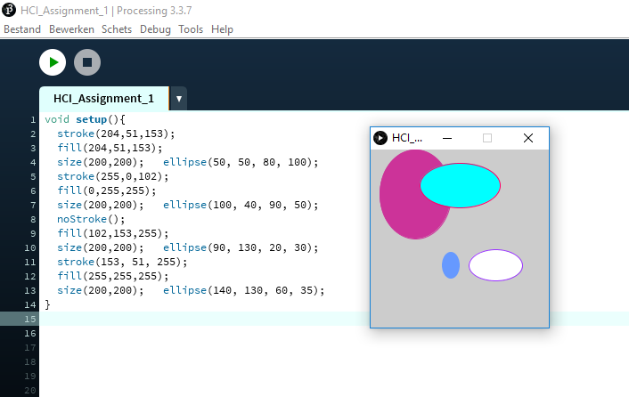
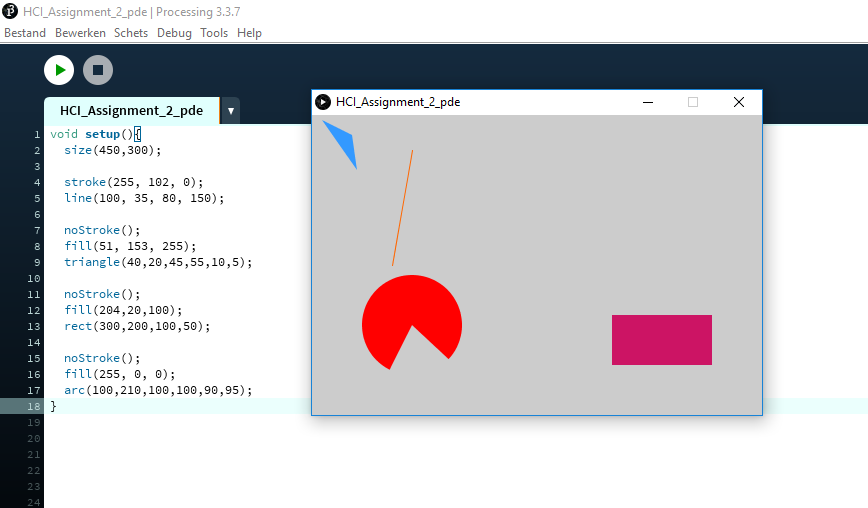
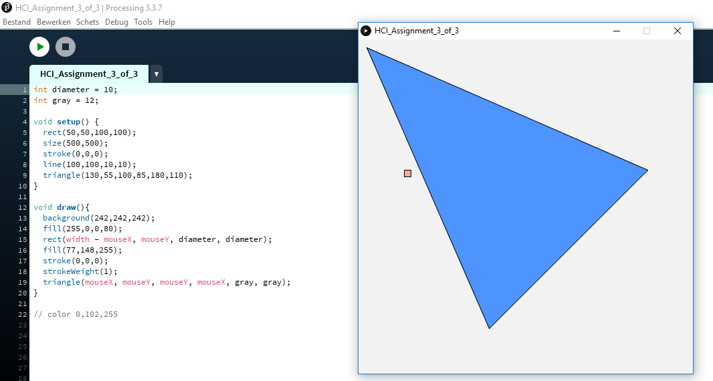

Tijdens het eerste werkcollege in week 3 heb ik de eerste twee assignments afgemaakt. Deze waren prima te doen, alhoewel ik de driehoek vorm wat lastiger vond. Het is geen perfecte driehoek geworden, maar ik ben tevreden hoe het eruit gekomen is. Assignment 3 werd wat lastiger, daar ben ik na het werkcollege mee verder gegaan.
Voor assignment 1 moesten we in het programma Processing meerdere cirkels/ovalen met verschillende strook en vulkleuren maken. Deze moesten verder ieder op een andere plek staan d.m.v coördinaten.
Voor assignment 2 was het de bedoeling om minimaal vier vormen te maken met verschillende kleuren, afmetingen en posities. Ik ben wat rond gaan proberen met de vormen en heb ze na elkaar verschoven naar een andere positie zodat ze apart bleven.
Voor assignment 3 was het de bedoeling om meerdere vormen te maken die je muis volgen. Ik ben als eerste begonnen met het maken van de vormen en daarna naar hoe ik ze rond zou kunnen bewegen. Ik had hier eerst een paar problemen mee zoals dat de vormen op elkaar bleven plakken, maar uiteindelijk lukte het om beide vormen over het hele venster te laten bewegen.
Bij deze opdracht moest je de webcam aan laten gaan en een cirkel op je gezicht weten te projecteren. Het aankrijgen van de webcam met een vierkant ging al snel omdat de gebruiksaanwijzing helder was. Ik veranderde 'rect' naat ellipse in de code om er een cirkel van te maken. Toen ik dit deed werd deze niet in het midden van mijn gezicht geprojecteerd. Dit was snel opgelost door een regel code toe te voegen.

Bij deze opdracht was het de bedoeling dat er een zwart balkje voor je ogen tevoorschijn komt, of een rode clownsneus voor je neus. Ik koos ervoor om een zwart balkje te proberen. Hiervoor moest ik de cirkel veranderen in een ingevulde rechthoek.

Voor deze opdracht moest je zelf een beeld samenstellen door je webcam te combineren met (een) afbeelding(en). Ik heb ervoor gekozen om twee harten in de plaats van mijn ogen te krijgen. Hiervoor voegde ik de lijn img = loadImage("heart.png"); toe en veranderde ellipse in de code naar image, met img ingevoegd in de haakjes op dezelfde lijn.

Voor deze opdracht moest ik de NyARToolkit library installeren en een van de augmented markers voor mijn webcam houden.